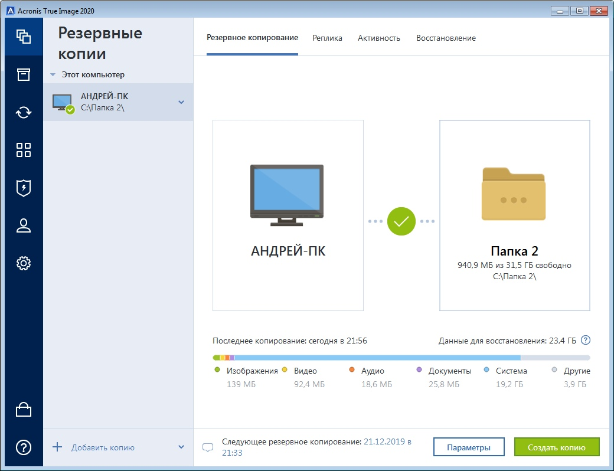

Средства оперативного восстановления системы
Данные программы предназначенный для восстановления работоспособности ОС путём отката (восстановления предыдущего состояния ПК) системных файлов, ключей реестра, установленных программ и т. д.
Пользователь может создавать новую точку восстановления вручную, производить откат к уже существующей точке или изменять конфигурацию восстановления системы. Более того, восстановление само по себе может быть обратимым. Старые точки восстановления сбрасываются для того, чтобы поддерживать использование объёма диска в точно определённом размере. Для многих пользователей это может обеспечить точки восстановления, покрывающие несколько прошедших недель. Пользователи, для которых важны производительность или используемый объём диска, могут также выбрать полное отключение восстановления системы. Для файлов, хранящихся на дисках, но которые служба восстановления не отследила, не будут созданы резервные копии и такие файлы никогда не будут восстановлены. Восстановление системы создаёт резервные копии системных файлов определённых расширений (.exe, .dll и т. д.) и сохраняет их для дальнейшего восстановления и использования. Также создаются резервные копии реестра и большинства драйверов.
Cobian Backup
Cobian Backup - бесплатная программа, позволяющая запланировать резервирование отдельных файлов или каталогов, перенося их в определенный каталог в другие папки/накопители на том же компьютере или на удаленном сервере в сети. Может быть установлена в двух вариантах: как приложение и как сервис Windows. Интерфейс прост и содержит весь необходимый набор опций для поэтапного резервного копирования. От пользователя нужно только указать время, источник и место назначения. Занимает мало ресурсов и может работать как фоновый процесс, проверяя резервирование и сохраняя бэкап, когда это необходимо.
Возможности:
-
Возможность игнорировать или включать объекты в архив.
-
Обеспечена полная поддержка протокола FTP в обоих направлениях.
-
Архивы Zip и 7-Zip могут включать пустые каталоги.
-
Работа со службой фонового копирования данных.
-
Поддерживает несколько методов компрессии и качественное кодирование данных.
-
Тонкая настройка пользовательского интерфейса.
-
Улучшенная система запуска и остановки сервиса.
Приведу пример работы с данной программой.

Так выглядит основное меню программы.
Создадим новое задание.

Меню создания задания.

В данном меню выбираем каталоги или файлы, которые мы хотим копировать, дальше выбираем место назначения.

Здесь мы можем выбрать с какой частотой будет выполняться копирование.

Так же программа может сжимать в архив копируемые файлы.

Задание готово, запустим его выполнение.

Результат.
Вывод: Простая программа с простым и удобным интерфейсом. Может сохранить все файлы, которые важны пользователю, с определенным расписанием.
Genie Timeline Free
Genie Timeline Free - бесплатное решение для выполнения резервного копирования и быстрого восстановления данных на вашем компьютере.
Бесплатная версия Genie Timeline позволяет создавать резервные копии самых разнообразных типов данных: сообщения электронной почты, документы, музыка, фотографии, электронные книги, видео и практически все, что может храниться на вашем компьютере.
Genie Timeline Free - машина времени для ОС Windows, которая выполняет непрерывную, в режиме реального времени защиту данных. С мастером настройки в два простых шага приложение готово работать самостоятельно, без вмешательства пользователя ПК. Этот простой в использовании инструмент резервного копирование данных работает в фоновом режиме, позволяя быстро и легко восстановить удаленную или поврежденную информации.
Основные особенности Genie Timeline Free
-
Минимальный интервал резервного копирования - 8 часов Мастер настройки резервного копирования в 2 шага
-
Резервное копирование открытых и заблокированных файлов
-
Фильтр восстановления по новым, измененным или удаленным
-
Версия файлов
-
Приложение для iPhone/iPad для мониторинга статуса резервного копирования
-
Резервное копирование для iPhone/iPad/iPod
-
Зона No Backup Zone
Процесс работы с программой:
Стартовое меню программы.
Выбираем место, куда сохранится результат.
Выбираем типы каких файлов мы хотим скопировать.
Процесс бэкапа.
Бэкап завершен.
Резульат.
Вывод: Удобная программа, которая поможет сохранить все нужные пользователю файлы. В основном делает все сама, пользователю лишь нужно выбрать типы файлов и место назначения.
Acronis True Image
Acronis True Image - мощное средство для создания точных образов жестких дисков и отдельных разделов, включая абсолютно все данные, приложения и операционные системы, которые могут быть восстановлены в любой момент на том же или другом компьютере прямо в Windows без перезагрузки!
Acronis True Image не только обеспечивает резервное копирование данных, но и предоставляет надежную защиту от широкого спектра угроз, включая компьютерные вирусы, установку нестабильного программного обеспечения и выход жестких дисков из строя.
Работа с программой:
Стартовое меню.
Выбираем куда хотим сохранить копию.
Я выбрал папку расположенную на жестком диске компьютера.
Процесс копирования.

Завершение.
Результат.
Вывод: Хорошая программа с возможностью копирования в облако, но требуется покупка.
Итог: Для резервного копирования и оперативного восстановления данных можно использовать любую программу из предложенных, но если требуется загрузка в облако, то отлично подходит Acronis True Image.